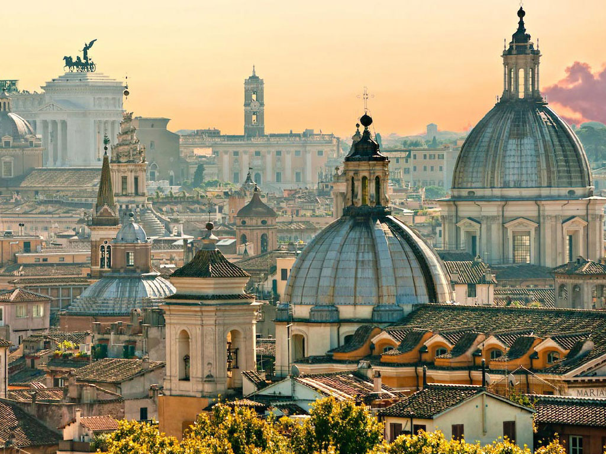
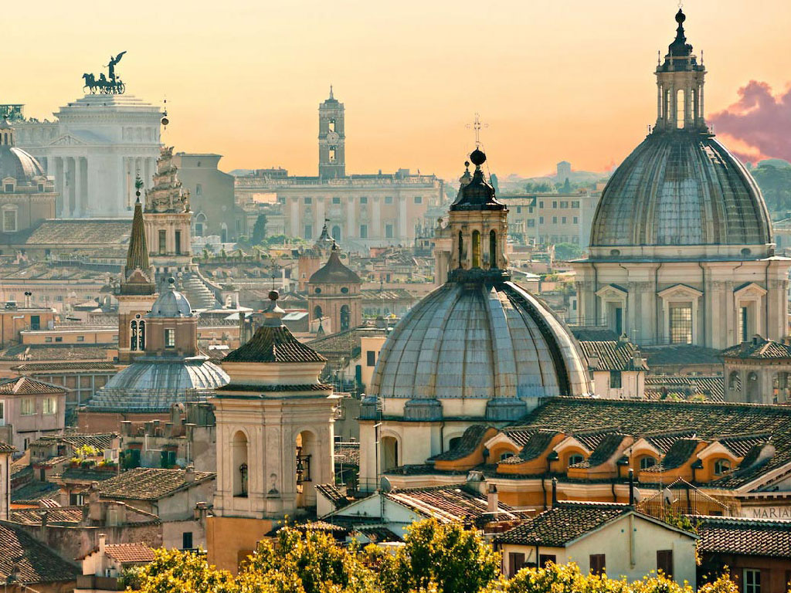
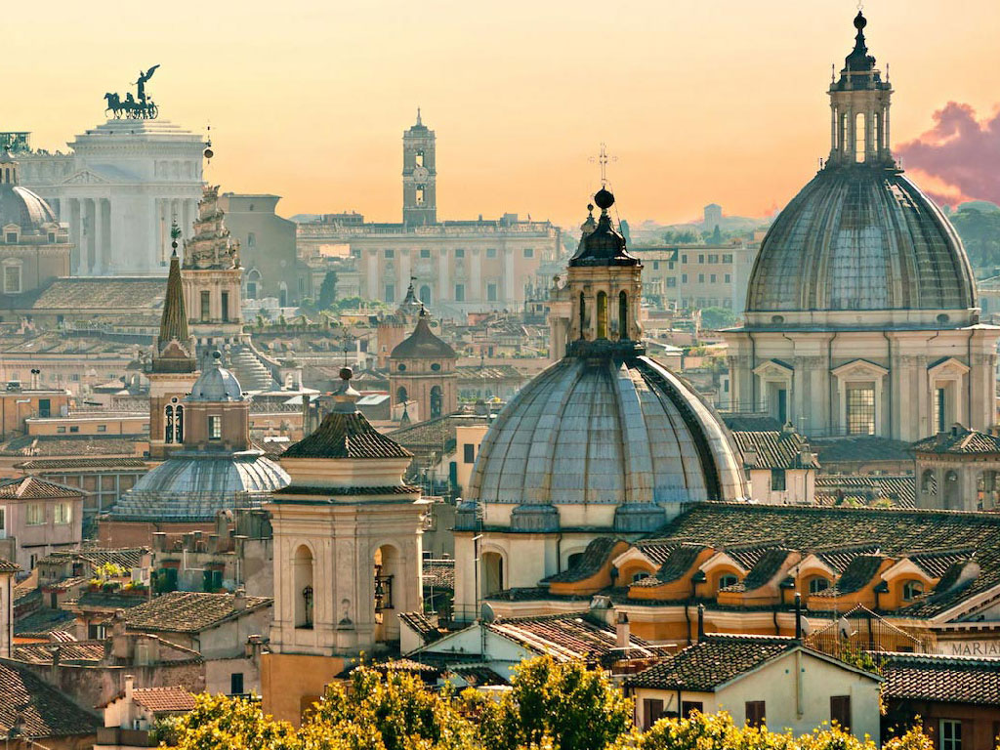
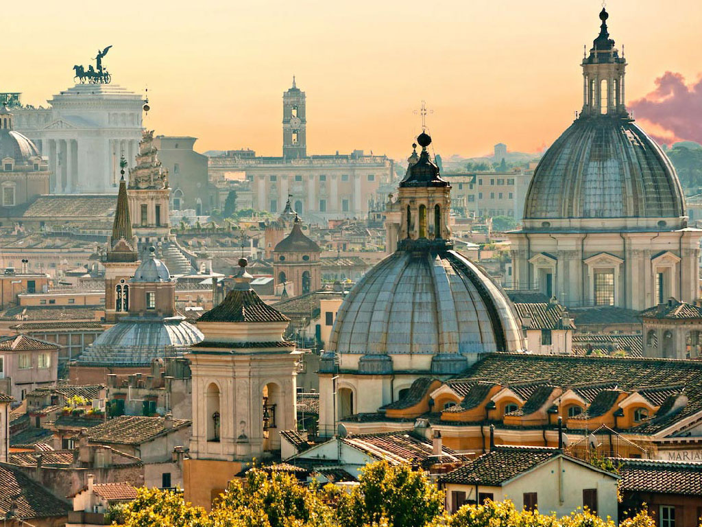

Rome est la capitale de l'Italie depuis 1871. Située au centre-ouest de la péninsule italienne, près de la mer Tyrrhénienne, elle est également la capitale de la région du Latium, et fut celle de l'Empire romain durant 357 ans. En 2016, elle compte 2 877 215 habitants établis sur 1 285 km2, ce qui fait d'elle la commune la plus peuplée d'Italie et la plus étendue d'Europe après Moscou et Londres1. Son aire urbaine, qui recense 4 356 403 habitants en 20162, est en revanche moins importante que celle de Milan et Naples3. Elle présente en outre la particularité de contenir un État enclavé dans son territoire : la cité-État du Vatican (Stato della Città del Vaticano), dont le pape est le souverain. C'est le seul exemple existant d'un État à l'intérieur d'une ville. L'histoire de Rome s'étend sur plus de vingt-huit siècles, depuis sa fondation mythique par Romulus en 753 av. J.-C. jusqu'à son rôle actuel de capitale de la République italienne. Second berceau de la civilisation occidentale après Athènes, la ville fut successivement le centre de la Monarchie romaine, de la République romaine (509 av. J.-C. – 27 av. J.-C.), puis de l'Empire romain (27 av. J.-C. – 330). Durant cette période, où nait la célèbre expression proverbiale « Tous les chemins mènent à Rome », la ville aurait compté entre un et deux millions d'habitants et domine l'Europe, l'Afrique du Nord et le Moyen-Orient tant militairement que culturellement, diffusant dans ces territoires la langue latine, ses arts et techniques ainsi que la religion chrétienne. Depuis le ier siècle, elle abrite le siège de l'Église catholique romaine, au sein des États pontificaux (752-1870) puis de la Cité du Vatican..
Selon la légende, Rome aurait été fondée le 21 avril 753 av. J.-C. par Romulus (sur le mont Palatin), qui aurait tué son frère jumeau Remus lors de la création de la ville. Ces deux frères sont les descendants du dieu Mars et de Rhéa Silvia, fille de Numitor. La généalogie légendaire de Romulus permet de donner une origine divine à Rome : la Ville aurait été créée, car les dieux le voulaient ainsi. Les Romains affectionnent de lier l'histoire de Rome à celle de la mythique ville de Troie et de sa chute chantée par l'Iliade, peut-être trouve-t-on là l'intention de la fable, rapportée par Plutarque, sur une origine de la ville fait de naufragés troyens et troyennes reprenant la trame narrative des Nauprestides11. D'après les sources archéologiques, les premiers occupants du site au viiie siècle av. J.-C. étaient des bergers vivant dans des cabanes installées sur le Mont Palatin, une colline qui domine le Tibre. À la même époque, la péninsule italienne est occupée par plusieurs peuples : les Grecs au Sud, les Carthaginois en Sardaigne et en Corse, les Étrusques au Nord. Ce sont ces derniers qui, au viie siècle av. J.-C. réunissent les villages dans la plaine du Latium et créent une cité qui est protégée par les sept collines environnantes et par ses remparts.
L'Italie est un pays industriel à l'économie diversifiée, dont le produit intérieur brut, global ou par habitant, se compare à ceux de pays comme la France ou la Grande-Bretagne. Ce produit intérieur brut de 2 245 706 millions de dollars en fait la 8e puissance économique mondiale en 2009 derrière les États-Unis, le Japon, la Chine, l'Allemagne et la France.
En raison de son histoire très ancienne, Rome est une ville très riche en monuments, musées et points de vue : elle est la ville du monde avec le plus de monuments. Dès le xviie siècle, lors de l'inauguration du Grand Tour par les Anglais, elle est une des destinations préférées de jeunes nobles européens venus parfaire leur éducation au contact des beautés antiques. Dans la deuxième moitié du siècle des Lumières18, cet afflux d'étrangers culmine, et s'enrichit de nombreux hommes de sciences désireux d'enquêter – dans un esprit encyclopédique – sur les savoirs rassemblés au fil des siècles dans les bibliothèques et les archives de la ville.
Située au nord du Portugal sur la façade atlantique et sur le rio Douro, Porto est la capitale de la région Nord, sous-région Grand Porto, district de Porto et la Grande Aire Métropolitaine de Porto (GAM). La GAM de Porto inclut, entre autres, les municipalités de Vila Nova de Gaia, Matosinhos, Maia, Espinho, Santa Maria da Feira, Arouca, São João da Madeira, Vila do Conde, Póvoa de Varzim, Valongo, Gondomar.